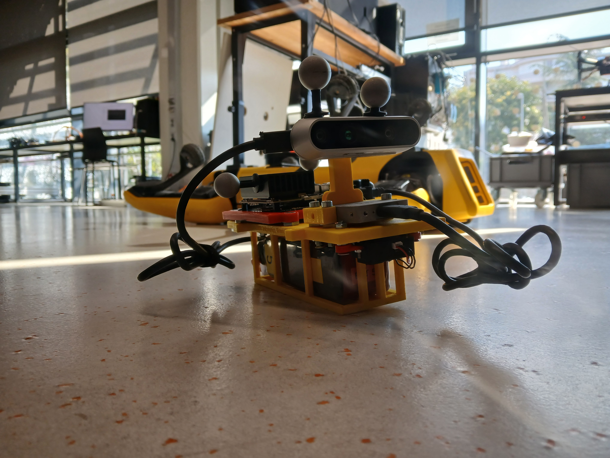
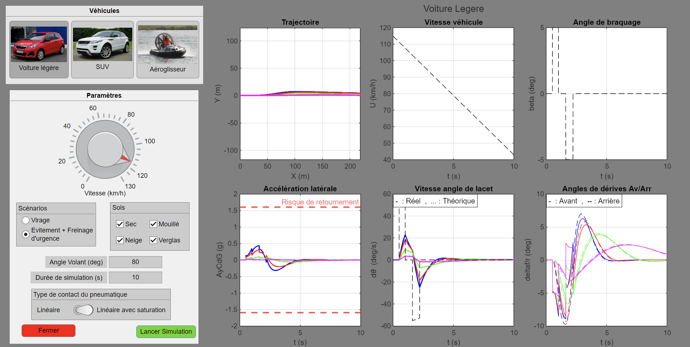
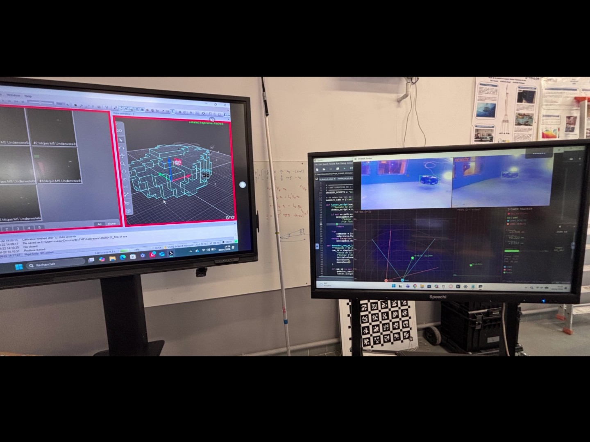
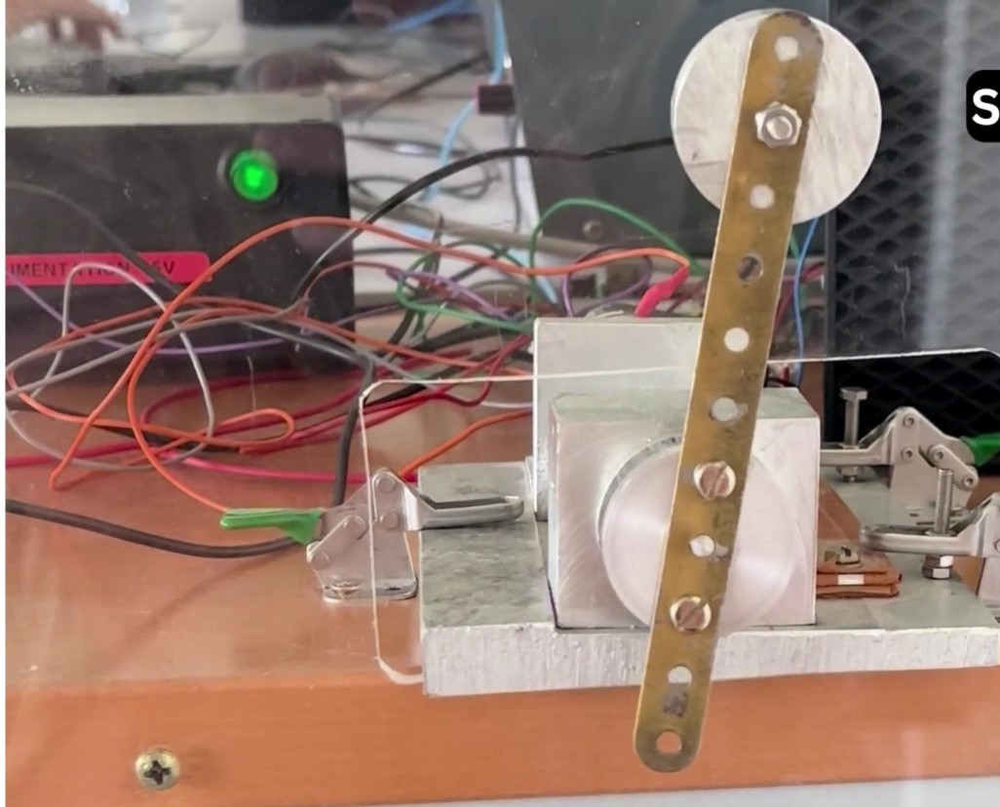
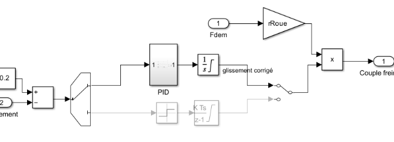
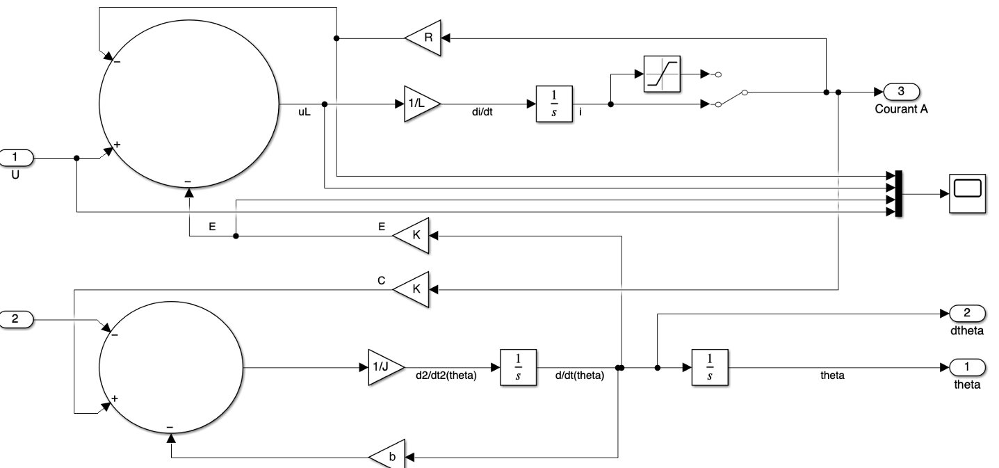

Maritime Surveillance CS GROUP
Development of an AI-processed image bank aimed at optimising surveillance. Role: creation of the database and the human-machine interface.
REPORT
Embedded Drone Platform
Odometry obtained via Visual-Inertial Data Collection Platform. Sensor Fusion Benchmarking. Sensors synchronization. GPS-denied System. ROS2 Architecture
REPORT
Autonomous Mobile Robot
Programming a robot in C to avoid obstacles. Work on state machines, analogue conversions and electronics.
REPORT
Programming a TurtleBot
Python programming on ROS/GAZEBO for a robot. Node communication via topics.
REPORT
Underwater Acoustics
Characterisation of underwater acoustic signals. Signal processing using "sliding products".
REPORT
Road Vehicle Dynamic Simulator
Interactive interface for studying the kinematics, dynamics of a vehicle, and its stability criteria. Objective of studying land vehicles.
REPORT
Spline Trajectory for Competition Robots
Attempt to improve the movement of RCT robots through an embedded B-Spline calculation. 2D and 3D trajectory-tracking system running at 50Hz. The project led to a speed and pose control system for a flying drone.
GITHUB
3D Tracking
Work on YOLO object recognition, a stereo vision system, calibration using ArUcos, and real-time 3D trajectory tracking and positioning.
REPORT

ABS / EBD Braking Systems
Anti-lock braking system (ABS) and electronic brake-force distribution (EBD): wheel-slip regulation and distribution of the braking force.
GITHUB